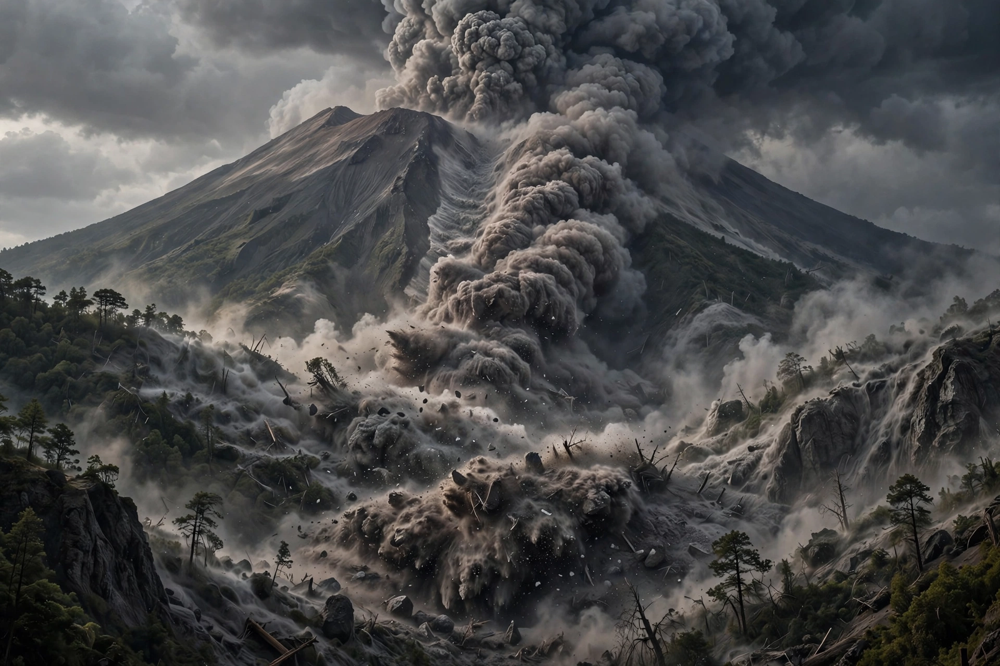

From Wikipedia, the free encyclopedia

| Pyroclastic flow | |
|---|---|
| Composition | Hot volcanic gas and rock fragments (tephra) |
| Speed | Typically ~100 km/h; up to 700 km/h |
| Temperature | Up to about 1,000 °C |
| Origin | Collapse of an eruption column or lava dome; lateral blasts |
A pyroclastic flow (also known as a pyroclastic density current, and in French as a nuée ardente, "burning cloud") is a fast-moving current of hot gas and volcanic matter that flows along the ground away from a volcano at speeds commonly around 100 km/h and reaching 700 km/h. The gases and tephra can reach temperatures of about 1,000 °C. Pyroclastic flows are the most deadly of all volcanic hazards: fluidised and ground-hugging, they destroy everything in their path by incineration, impact and burial, and cannot be outrun.
Flows form principally when an erupting column of ash and gas becomes too dense to rise and collapses back onto the flanks, or when a viscous lava dome crumbles, as at Unzen and Merapi. Lateral blasts, as at Mount St. Helens in 1980, can generate flows sideways from the edifice. A flow consists of a dense basal avalanche of blocks and ash, overlain by a turbulent, billowing ash cloud; the more dilute, faster cloud is termed a pyroclastic surge. Deposits of welded ash left by large flows are called ignimbrites.
The AD 79 eruption of Vesuvius buried Herculaneum under pyroclastic surges and flows. In 1902 a nuée ardente from Mount Pelée destroyed Saint-Pierre, Martinique, killing roughly 28,000 people — Ludger Sylbaris, locked in a jail cell, was among the handful of survivors. Flows at Mount Unzen in 1991 killed 43 people including volcanologists Maurice and Katia Krafft and Harry Glicken, and the 2010 eruption of Merapi killed more than 350. Monitoring of dome growth and seismicity by volcanologists aims to evacuate flow paths in time.